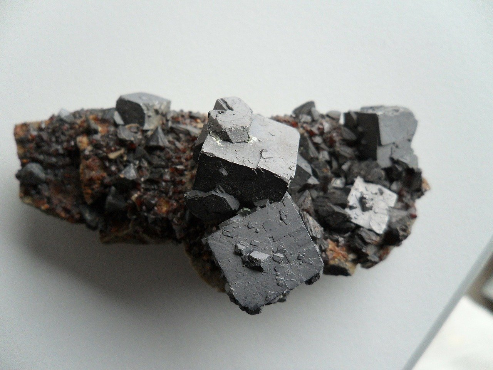
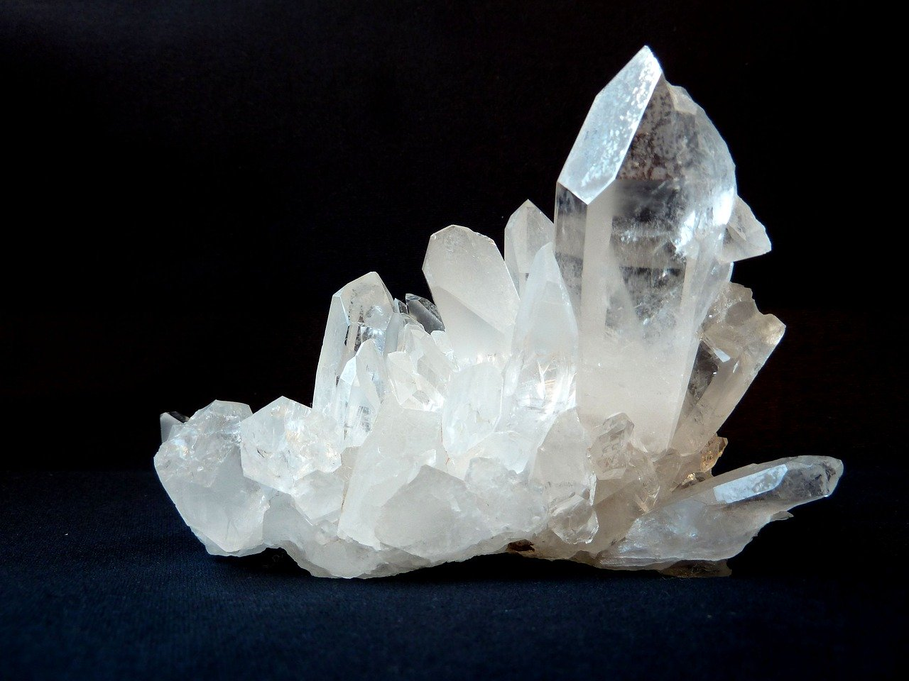
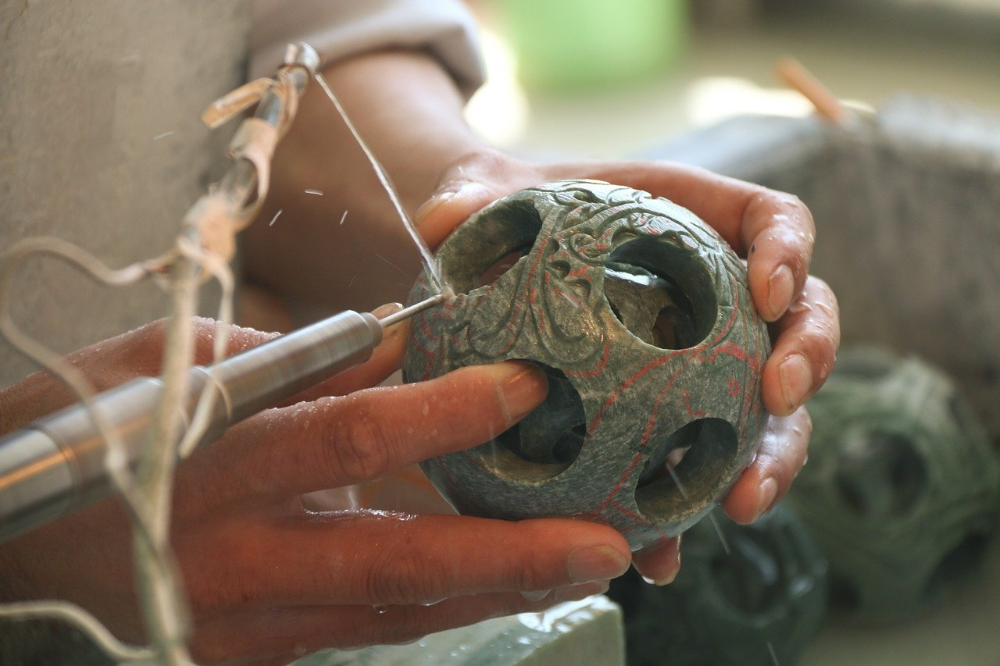

About Crystals
This collection was made because I enjoy crystals. Crystals were actually forged into jewelry and
other accessories for tradition. The healing aspect of crystals is that when placed over a part of
the body it would transform the energy within to bring a better balance.
History
The first historical references to the use of crystals come from ancient the Ancient Sumerians,
who included crystals in magic formulas. The Ancient Egyptians used lapis lazuli, turquoise,
carnelian, emerald and clear quartz in their jewellery. They also carved grave amulets of the same
gems. The Ancient Egyptians used stones primarily for protection and health. Chrysolite (later
translated as both topaz and peridot) was used to combat night terrors and purge evil spirits.
Egyptians also used crystals cosmetically. Galena (lead ore) was ground to a powder and used as the
eye shadow known as kohl. Malachite was used in a similar manner. Green stones in general were used
to signify the heart of the deceased and were included in burials. Green stones were used in a
similar way at a later period in Ancient Mexico.

The Ancient Greeks attributed a number of properties to crystals and many names we use today are
of Greek origin. The word 'crystal' comes from the Greek word for ice, as it was believed that clear
quartz was water that had frozen so deeply that it would always remain solid. The word amethyst
means 'not drunken' and was worn as an amulet to prevent both drunkenness and hangovers. Hematite
comes from the word for blood, because of the red colouration produced when it oxidises. Hematite
is an iron ore and the ancient Greeks associated iron with Aries, the god of war. Greek soldiers
would rub hematite over their bodies before battle, perportedly to make themselves invulnerable.
Greek sailors also wore a variety of amulets to keep them safe at sea.

Jade was highly valued in ancient China and some Chinese written characters represent jade beads.
Musical instruments in the form of chimes were made from jade and around 1000 years ago Chinese
emperors were sometimes buried in jade armour. There are burials with jade masks from around the
same period in Mexico. Jade was recognised as a kidney healing stone both in China and South
America. More recently - dating from around 250 years ago - the Maoris of New Zealand wore jade
pendants representing the ancestor spirits, which were passed down many generations through the male
line. The tradition of green stones being lucky continues in parts of New Zealand to this day.
Healing
In 1609 Anselmus de Boot, court physician to Rudolf II of Germany, suggested that any virtue a
gemstone has is due to the presence of good or bad angels. The good angels would confer a special
grace to the gems, but the bad angels would tempt people into believing in the stone itself, and
not in God's gifts bestowed on it. He goes on to name certain stones as helpful, and put other's
qualities down simply to superstition. Later in the same century, Thomas Nicols expressed in his
'Faithful Lapidary' that gems, as inanimate objects, could not possess the effects claimed in the
past. Thus, in the Age of Enlightenment, the use of precious stones for healing and protection began
to fall from favour in Europe.
In the early part of the 19th century, a number of interesting experiments were conducted to
demonstrate the effects of stones on subjects who believed themselves to be clairvoyant. In one
case, the subject claimed to feel not only physical and emotional changes when touched with various
stones, but also to experience smells and tastes.
Meaning
Although no longer in use medicinally, gemstones continued to hold meaning. Until recently, jet
was popularly worn by those in mourning, and garnet was often worn in times of war. There is a
tradition in a local family here in southwest England: every female descendent wears an antique
moonstone necklace for her wedding, which has been in the family for generations. It was only
recently that one family member realised this was a fertility symbol.
Many tribal cultures have continued the use of gemstones in healing until very recently, if not
through to the present day. The Zuni tribe in New Mexico make stone fetishes, which represent animal
spirits. These were ceremonially 'fed' on powdered turquoise and ground maize. Beautiful inlaid
fetishes are still made to sell, and are very collectable artefacts or sculptures, although the
spiritual practise surrounding them is no longer much in use. Other Native American tribes still
hold precious stones, especially turquoise, sacred. Both Aborigines and Maoris have traditions
regarding stones and healing or spiritual practise, some of which they share with the rest of the
world, while some knowledge still kept private within their communities.

It is interesting to note that there are many examples of gemstones meaning similar things to
different cultures, even when there has been absolutely no interaction between these cultures, and
no opportunity for crossover. Jade was considered to be a kidney healing stone by the ancient
Chinese, and also Aztec and Mayan civilisations, turquoise has been worn to give strength and
health all over the world, and jaspers have almost always conferred both strength and calm.